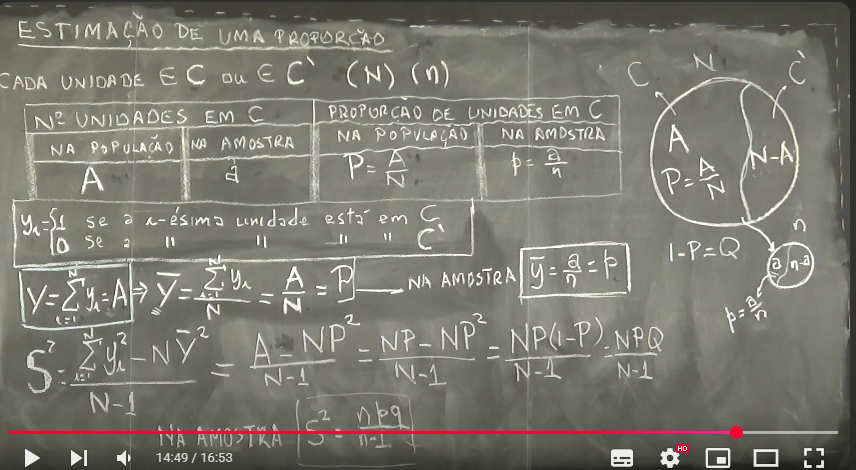
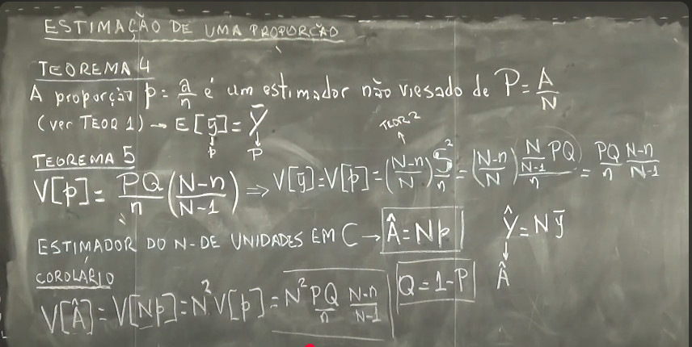
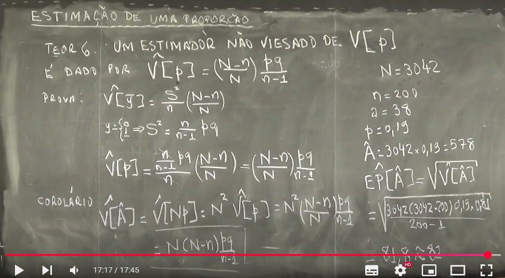
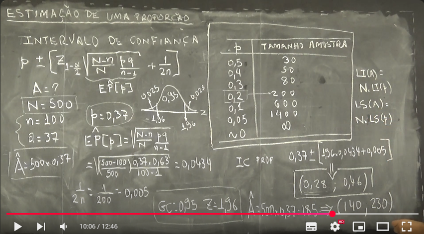

Semana 5
Aula 01 - Tamanho da Amostra com Base no Erro
Nesta aula, aprendemos como determinar o tamanho da amostra necessário em um estudo, a partir de um erro máximo admissível, utilizando uma abordagem com base na variância amostral e no intervalo de confiança.
Conceito de Erro Relativo
Queremos construir um intervalo de confiança para a média populacional \(\bar{Y}\) com erro relativo \(r\), de modo que:
\[ P\left( \left| \frac{\bar{y} - \bar{Y}}{\bar{Y}} \right| \le r \right) = 1 - \alpha \]
Isso equivale a:
\[ P\left( \bar{Y} - r\bar{Y} \le \bar{y} \le \bar{Y} + r\bar{Y} \right) = 1 - \alpha \]
Modelo Normal Aproximado
Considerando a distribuição aproximada normal para \(\bar{y}\):
\[ \bar{y} \sim \mathcal{N}\left( \bar{Y}, \left( \frac{N - n}{N} \right) \frac{s^2}{n} \right) \]
Usamos o fator \(z_{(1 - \alpha/2)}\) da distribuição normal padrão para construir o intervalo:
\[ r\bar{Y} = z_{(1 - \alpha/2)} \cdot \sqrt{ \left( \frac{N - n}{N} \right) \cdot \frac{s^2}{n} } \]
Fórmula Geral para o Tamanho da Amostra
A fórmula para o tamanho da amostra \(n\) com correção para população finita é:
\[ n = \frac{n_0}{1 + \frac{n_0}{N}} \]
Onde \(n_0\) é o tamanho da amostra para população infinita (sem correção):
\[ n_0 = \left( \frac{z_{(1 - \alpha/2)} \cdot s}{r \cdot \bar{y}} \right)^2 \]
Exemplo: Estudo com Amostra Piloto
Suponha que foi feita uma amostra piloto com:
- \(n = 50\)
- \(\bar{y} = 5{,}2\)
- \(s = 1{,}5\)
- Erro relativo admissível: \(r = 0{,}03\)
- Nível de confiança: \(1 - \alpha = 0{,}95\)
- Tamanho da população: \(N = 400\)
Passo 1: Cálculo de \(n_0\)
Usando \(z_{(1 - \alpha/2)} = 1{,}96\) (tabela normal para 95%):
\[ n_0 = \left( \frac{1{,}96 \cdot 1{,}5}{0{,}03 \cdot 5{,}2} \right)^2 = 355 \]
Passo 2: Corrigindo para População Finita
\[ n = \frac{355}{1 + \frac{355}{400}} = 188 \]
Conclusão
Para garantir um erro máximo relativo de 3% com 95% de confiança, seria necessário coletar uma amostra de aproximadamente 188 elementos, considerando que a população tem 400 unidades.
Quadro da aula: Quadro da aula 01 - Semana 5
{kind=link}
Aula 02 - Estimação de uma Proporção
Nesta aula, abordamos o processo de estimação de uma proporção populacional com base em uma amostra aleatória simples.
Conceito de Proporção
Considere um conjunto populacional de tamanho \(N\), e uma característica de interesse \(C\), como por exemplo:
- “A unidade pertence a um grupo específico”
- “A unidade apresenta determinada propriedade”
Cada unidade da população ou pertence a \(C\), ou não pertence.
| Na População (tamanho \(N\)) | Na Amostra (tamanho \(n\)) | |
|---|---|---|
| Nº de unidades em \(C\) | \(A\) | \(a\) |
| Proporção em \(C\) | \(P = \frac{A}{N}\) | \(p = \frac{a}{n}\) |
Variável Indicadora
Para cada unidade \(i\), definimos uma variável indicadora:
\[ y_i = \begin{cases} 1, & \text{se a $i$-ésima unidade pertence a } C \\ 0, & \text{caso contrário} \end{cases} \]
Representação da População
A ideia é visualizar a divisão da população em dois subconjuntos:
- \(C\): com \(A\) unidades
- \(C'\): com \(N - A\) unidades
Quadro da aula: 
Estimadores
A média da amostra de indicadores \(\bar{y}\) fornece uma estimativa para a proporção \(P\):
\[ \bar{y} = \frac{1}{n} \sum_{i=1}^{n} y_i = \frac{a}{n} = p \]
Ou seja, a proporção amostral \(p\) é o estimador de \(P\).
Variância Populacional da Proporção
A variância da variável indicadora \(y\) (em toda a população) é:
\[ S^2 = \frac{1}{N - 1} \sum_{i=1}^{N} (y_i - \bar{Y})^2 \]
Sabemos que:
\[ \bar{Y} = \frac{A}{N} = P \]
Como \(y_i \in \{0, 1\}\), temos que:
\[ \sum_{i=1}^{N} y_i = A \quad \text{e} \quad \sum_{i=1}^{N} y_i^2 = A \]
Portanto:
\[ S^2 = \frac{1}{N - 1} \left( A - \frac{A^2}{N} \right) = \frac{1}{N - 1} \cdot \left( NP - NP^2 \right) = \frac{NP(1 - P)}{N - 1} = \frac{NPQ}{N - 1} \]
onde \(Q = 1 - P\).
Estimativa Amostral da Variância
Na amostra, a variância de \(y_i\) pode ser estimada por:
\[ s^2 = \frac{n p q}{n - 1} \]
onde:
- \(p = \frac{a}{n}\): proporção amostral
- \(q = 1 - p\)
Conclusão
A proporção populacional \(P\) é estimada pela proporção amostral \(p\).
A variância da proporção depende da variabilidade binária da variável indicadora \(y_i\).
A variância populacional da proporção é:
\[ S^2 = \frac{NPQ}{N - 1} \]
A variância amostral (estimada a partir da amostra):
\[ s^2 = \frac{n p q}{n - 1} \]
Esse conceito é especialmente útil para construir intervalos de confiança para proporções, como veremos nas próximas aulas.
Aula 03 - Estimação de uma Proporção: Teoremas 4, 5 e 6
Nesta aula, aprofundamos o estudo da estimação de proporções populacionais com base em amostras aleatórias simples. Apresentamos e provamos os Teoremas 4, 5 e 6, que tratam do viés e variância dos estimadores para a proporção populacional.
Teorema 4 - Estimador Não Viesado da Proporção
Seja:
- \(N\): tamanho da população
- \(A\): número de unidades na população com a característica \(C\)
- \(n\): tamanho da amostra
- \(a\): número de unidades na amostra com a característica \(C\)
Proporções:
- População: \(P = \frac{A}{N}\)
- Amostra: \(\hat{p} = \frac{a}{n}\)
Teorema 4:
> A proporção amostral \(\hat{p} = \frac{a}{n}\) é um estimador não viesado da proporção populacional \(P = \frac{A}{N}\).
Ou seja:
\[ \mathbb{E}[\hat{p}] = P \]
Teorema 5 - Variância da Proporção
Sabemos que cada unidade pode ser codificada como:
\[ y_i = \begin{cases} 1, & \text{se a unidade pertence a } C \\\\ 0, & \text{caso contrário} \end{cases} \]
A proporção pode ser vista como a média dessas variáveis indicadoras:
\[ \hat{p} = \bar{y} \]
Logo, a variância da proporção segue do Teorema 2:
\[ \mathbb{V}[\hat{p}] = \mathbb{V}[\bar{y}] = \left( \frac{N - n}{N} \right) \frac{S^2}{n} \]
Sabemos que para variáveis indicadoras \(y_i \in \{0,1\}\), a variância populacional é:
\[ S^2 = \frac{NPQ}{N - 1}, \quad \text{onde } Q = 1 - P \]
Substituindo:
\[ \mathbb{V}[\hat{p}] = \left( \frac{N - n}{N} \right) \frac{1}{n} \cdot \frac{NPQ}{N - 1} = \frac{PQ}{n} \cdot \frac{N - n}{N - 1} \]
Estimador do Número de Unidades na População
Dado que \(P = \frac{A}{N}\), podemos estimar o total de unidades com a característica \(C\) por:
\[ \hat{A} = N \hat{p} \]
Corolário: Variância do Estimador do Total
Como \(\hat{A} = N \hat{p}\), temos:
\[ \mathbb{V}[\hat{A}] = N^2 \mathbb{V}[\hat{p}] = N^2 \cdot \frac{PQ}{n} \cdot \frac{N - n}{N - 1} \]
Quadro da aula: 
Teorema 6 - Estimador Não Viesado da Variância de \(\hat{p}\)
Como não conhecemos \(P\) e \(Q\), usamos os estimadores:
- \(\hat{p} = \frac{a}{n}\)
- \(\hat{q} = 1 - \hat{p}\)
Teorema 6:
> Um estimador não viesado da variância de \(\hat{p}\) é:
\[ \hat{\mathbb{V}}[\hat{p}] = \left( \frac{N - n}{N} \right) \cdot \frac{\hat{p}\hat{q}}{n - 1} \]
Prova (Teorema 6)
Sabemos que:
\[ \hat{p} = \bar{y}, \quad \text{e que } s^2 = \frac{1}{n - 1} \sum_{i=1}^n (y_i - \bar{y})^2 \]
Para variáveis indicadoras \(y_i \in \{0, 1\}\):
\[ s^2 = \frac{n}{n - 1} \cdot \hat{p}\hat{q} \]
Logo:
\[ \hat{\mathbb{V}}[\hat{p}] = \left( \frac{N - n}{N} \right) \cdot \frac{s^2}{n} = \left( \frac{N - n}{N} \right) \cdot \frac{\hat{p}\hat{q}}{n - 1} \]
Corolário: Estimador da Variância do Total
Usando \(\hat{A} = N \hat{p}\):
\[ \hat{\mathbb{V}}[\hat{A}] = N^2 \cdot \hat{\mathbb{V}}[\hat{p}] = N^2 \cdot \left( \frac{N - n}{N} \right) \cdot \frac{\hat{p} \hat{q}}{n - 1} \]
Exemplo
Dado:
- \(N = 3042\)
- \(n = 200\)
- \(a = 38\)
- \(\hat{p} = \frac{38}{200} = 0{,}19\)
- \(\hat{q} = 1 - 0{,}19 = 0{,}81\)
Estimativa do total:
\[ \hat{A} = N \cdot \hat{p} = 3042 \cdot 0{,}19 = 577{,}98 \approx 578 \]
Erro padrão:
\[ EP[\hat{A}] = \sqrt{\hat{\mathbb{V}}[\hat{A}]} = \sqrt{N^2 \cdot \left( \frac{N - n}{N} \right) \cdot \frac{\hat{p}\hat{q}}{n - 1}} \]
Substituindo:
\[ EP[\hat{A}] = \sqrt{3042^2 \cdot \frac{3042 - 200}{3042} \cdot \frac{0{,}19 \cdot 0{,}81}{199}} \approx 81{,}8 \]
Quadro da aula:  —
Aula 04 - Intervalo de Confiança para a Proporção
Seja \(\hat{p}\) a proporção amostral de sucesso. Queremos estimar a proporção populacional \(p\) com base em uma amostra aleatória simples (AAS) sem reposição.
O intervalo de confiança com nível \(1 - \alpha\) é dado por:
\[ p \pm z_{1 - \frac{\alpha}{2}} \cdot \sqrt{ \frac{N - n}{N} \cdot \frac{p q}{n - 1}} + \frac{1}{2n} \]
Onde:
- \(\hat{p}\) é a proporção amostral;
- \(z_{1 - \frac{\alpha}{2}}\) é o quantil da normal padrão;
- \(N\) é o tamanho da população;
- \(n\) é o tamanho da amostra;
- \(p = \hat{p}\) e \(q = 1 - \hat{p}\);
- \(\alpha\) é o nível de significância;
- O termo \(\frac{1}{2n}\) é uma correção adicional para tornar o intervalo mais conservador.
Exemplo
Considere os seguintes dados:
- \(N = 500\) (população)
- \(n = 100\) (amostra)
- \(a = 37\) (elementos com a característica de interesse)
Proporção amostral
\[ p = \frac{a}{n} = \frac{37}{100} = 0{,}37 \]
Erro padrão da proporção (com correção de população finita)
\[ \hat{EP[p]} = \sqrt{ \frac{N - n}{N} \cdot \frac{p q}{n - 1} } = \sqrt{ \frac{500 - 100}{500} \cdot \frac{0{,}37 \cdot 0{,}63}{99} } \approx 0{,}0434 \]
Fator de Correção de Continuidade:
\[ \frac{1}{2n} = \frac{1}{200} = 0{,}005 \]
Nível de confiança de 95%
\[ z_{0{,}975} = 1{,}96 \]
Intervalo de confiança:
\[ IC(p) = 0{,}37 \pm 1{,}96 \cdot (0{,}0434 + 0{,}005) = 0{,}37 \pm 0{,}0948 \]
Portanto:
\[ IC(p) = (0{,}28,\ 0{,}46) \]
Estimativa do Total Populacional
Sabemos que:
\[ \hat{A} = N \cdot p = 500 \cdot 0{,}37 = 185 \]
Para obter o intervalo de confiança para o total:
\[ IC(\hat{A}) = \left( N \cdot LI(p);\ N \cdot LS(p) \right) = (500 \cdot 0{,}28;\ 500 \cdot 0{,}46) = (140,\ 230) \]
Quadro da aula: 
Tabela de Referência: Tamanho Amostral Mínimo para Diferentes Valores de \(p\)
| \(p\) | Tamanho da Amostra \(n\) |
|---|---|
| 0,5 | 30 |
| 0,4 | 50 |
| 0,3 | 80 |
| 0,2 | 120 |
| 0,1 | 200 |
| 0,05 | 600 |
| 0,02 | 1400 |
| 0 | \(\infty\) |